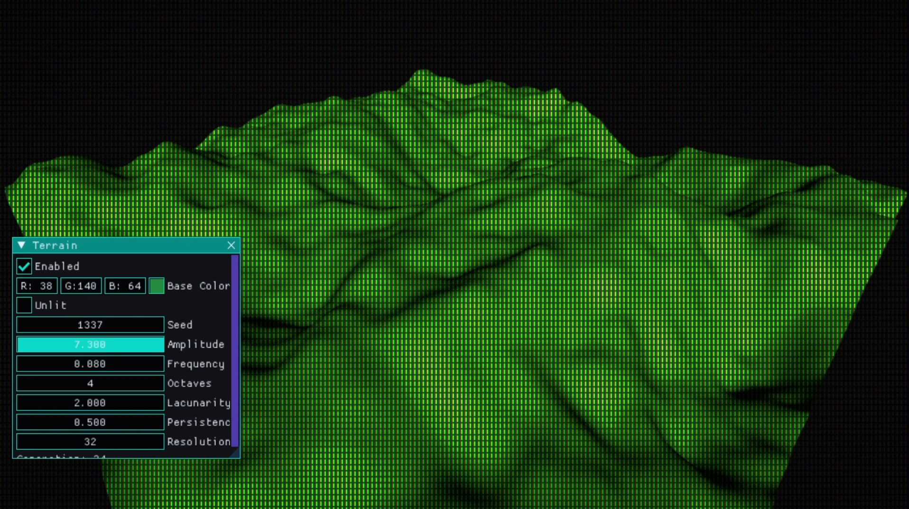
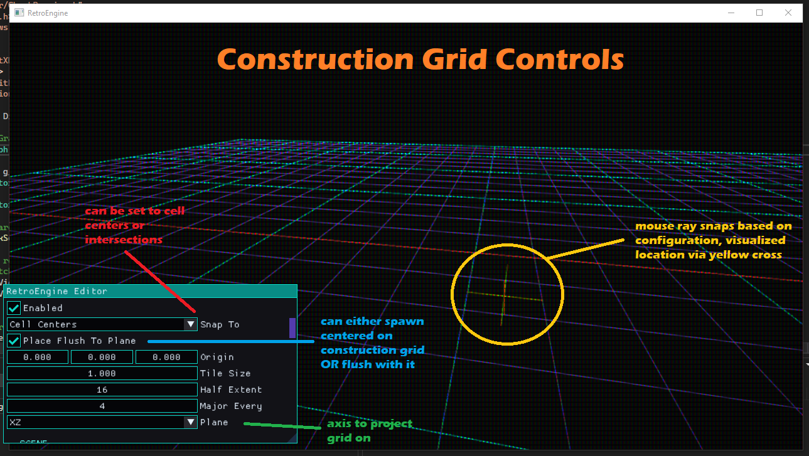
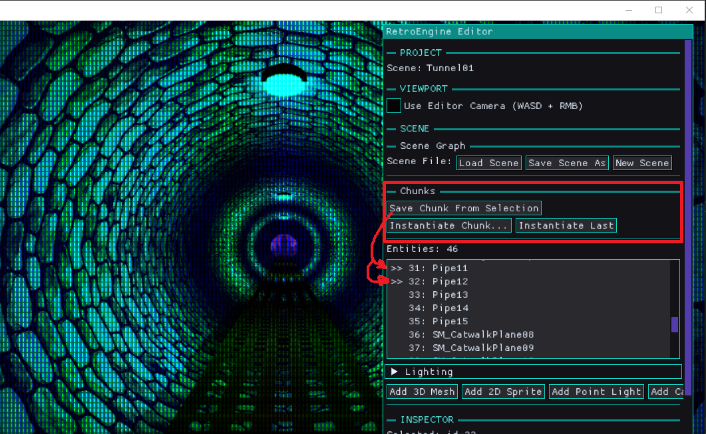
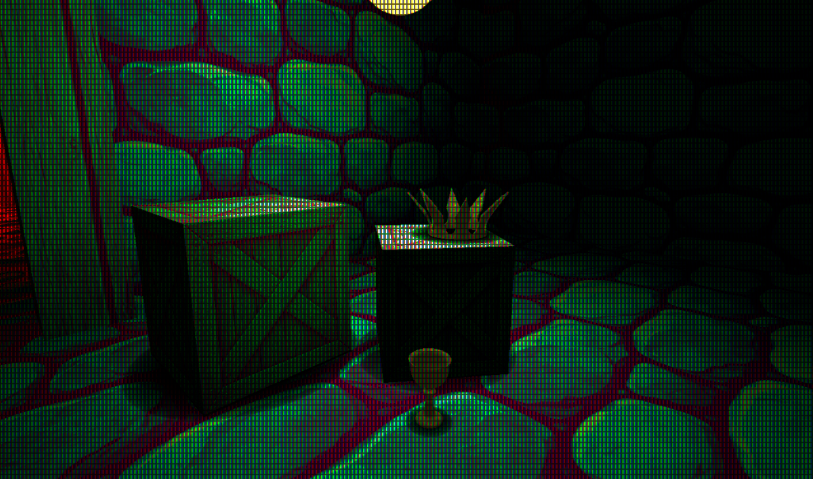
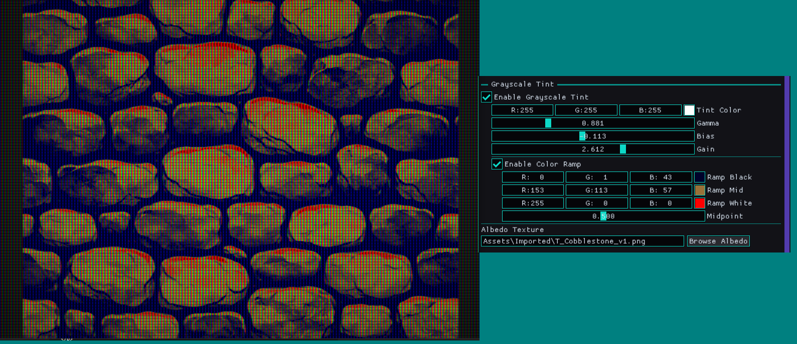

Indoor chunk tools exposed something I had been ignoring:
everything outside still sat on an infinite flat plane.
That was fine for debugging, but not for building real spaces.
This week, the chunk system quietly evolved into something much larger:
a procedural terrain system built on the same entity pipeline as everything else.
Terrain in RetroEngine does not get a special renderer or hidden pass.
Each terrain chunk is just a normal SceneEntity with a generated mesh.
That decision kept the renderer simple,
but it forced discipline around ownership, lifetime, and serialization.
Several subtle bugs surfaced along the way.
Terrain is serialized as parameters only:
seed, frequency, amplitude, resolution, shading flags.
No mesh blobs on disk.
From that small block of data, an entire world can regenerate.
With deterministic generation in place,
streaming naturally followed.
The camera’s world position maps to chunk coordinates,
and a square region of terrain updates around it.
Fly forward and the world keeps building itself —
all derived from a handful of numbers saved in the scene file.

Read Full Log
This is just a short summary — click above to read the full log.
📐 Dev Log 16 — Building on a Plane
February 8, 2026
Editor & Placement
This dev log focuses on a deceptively simple goal:
making placement inside RetroEngine feel physical instead of list-driven.
What started as “just a construction grid” quickly turned into a stress test
for the editor, the renderer, and some long-standing assumptions about how
temporary data should interact with the GPU.
The construction grid itself is intentionally minimal.
It is editor-only, owns no entities, and does not exist at runtime.
Given a camera and a mouse ray, it answers one question:
where would this land?
That small shift unlocked a more tactile way to assemble spaces
without introducing a second scene graph or heavy gizmo systems.
From there, chunk placement needed clearer rules.
Explicit chunk anchors were introduced to define pivots without adding
hierarchy or hidden ownership.
Chunks remain plain data (reusable, instanced, and disposable),
but now spawn deterministically and predictably on the grid.
The real challenge came with live previews.
Rendering chunks before placement sounds trivial,
but doing it safely in Direct3D 12 forced stricter boundaries
between editor and runtime rendering.
The end result is a preview system that uses the same mesh path as real entities,
but with disciplined resource ownership and no mutation of scene state.
This log also marks roughly 100 days of work on RetroEngine!
The features are getting quieter,
but the engine itself is getting stronger.
Fewer fragile edges.
Clearer rules.
Faster iteration.

Read Full Log
This is just a short summary — click above to read the full log.
🧩 Dev Log 15 — Scrolling Through Chunks
February 1, 2026
Editor & Materials
This dev log covers a week where the focus was on adding some
fun features, and removing lots of friction.
As I started building more real spaces inside RetroEngine,
small limitations kept surfacing and slowing everything down.
The first set of changes grew out of material authoring.
Animated UVs were unified across sprites and meshes,
turning scrolling textures into a true material feature instead of a special case.
At the same time, alpha cutout was added with deliberate constraints,
favoring predictable, era-correct behavior that works with the CRT pipeline
instead of fighting it.
From there, the work shifted into editor tooling.
Smarter duplication exposed the need for real spatial understanding,
which led to geometry-aware placement, reusable content chunks,
and multi-entity editing without introducing heavy prefab systems
or new runtime complexity.
Taken together, these changes are about scaling the engine responsibly.
RetroEngine remains opinionated and constrained on purpose,
but it is becoming faster and more comfortable to build with.
The goal is still the same:
let simple systems do real work without turning the editor into a second engine.

Read Full Log
This is just a short summary — click above to read the full log.
💡 Dev Log 14 — The Point of Lighting
January 27, 2026
Rendering
Up to this point, RetroEngine could render scenes correctly,
but they felt flat.
Objects felt "floaty".
Everything was evenly lit.
There was no sense of locality or presence tying things together.
This dev log is about fixing that without breaking the engine’s core goals.
Lighting was added not as a realism upgrade, but as a way to bring the
CRT pipeline to life and give scenes emotional weight.
The focus stayed on simple, predictable techniques that fit a
retro-inspired renderer.
Point lights were introduced as entity-driven components,
allowing localized illumination without a deferred renderer,
shadow maps, or heavy ray techniques.
To ground objects visually, a cheap but deliberate blob shadow system
was layered in: a classic solution that solves most of the problem
while keeping performance and behavior easy to reason about.
Together, these changes make scenes feel less synthetic and more alive,
while staying true to the engine’s constraints:
no baked lighting, no overengineering, and no effects that fight
the retro aesthetic RetroEngine is built around.

Read Full Log
This is just a short summary — click above to read the full log.
🛠️ Dev Log 13 — Building Scenes Faster With Reuse Tools
January 19, 2026
Tools
With the CRT pipeline stabilized, the bottleneck shifted away from rendering
and toward scene authoring.
Too much time was being spent duplicating work,
redoing small variations, and manually keeping entities in sync.
This dev log focuses on removing that friction.
Grayscale material paths were added with tint, gamma, bias, gain,
and color ramp controls, allowing a single texture to produce
multiple visual outcomes without reauthoring assets.
The editor was also extended with copy and paste for individual
entity attributes and multi-select editing in the scene outliner,
making it possible to apply changes across groups of objects at once.
Together, these tools shift RetroEngine toward faster iteration,
intentional reuse, and scene composition that scales beyond
one-entity-at-a-time editing.

Read Full Log
This is just a short summary — click above to read the full log.
🎬 Dev Log 12 — Current State Overview (Video #1)
January 17, 2026
Video
A full walkthrough of RetroEngine as it exists today.
This 25-minute video covers the editor, rendering pipeline,
CRT simulation, and scene authoring workflow end-to-end.
 Watch the Overview
Watch the Overview
📺 Dev Log 11 — CRT Persistence Is Harder Than It Looks
January 14, 2026
Preview
After stabilizing the CRT render pipeline in the last dev log,
I wanted to tackle one last missing detail before moving forward:
phosphor persistence.
The goal sounded simple: subtle ghosting, faint trails, that
unmistakable analog “memory” during motion.
Instead, it opened a can of worms.
What followed was a cascade of failures:
broken masks, impossible depth behavior, infinite trails,
collapsing brightness, and a mysterious green tint that slowly
overtook the entire image.
This dev log documents that failure in detail:
why Rec.709 luma weighting made sense at first,
why it completely fell apart inside a feedback loop,
and how persistence turned out to be a temporal system
rather than a blending problem.
The breakthrough came from a single conceptual shift:
persistence should never add energy.
It should only preserve what is already fading.
By reframing the problem and designing a more physically grounded model,
the CRT finally behaved the way it should:
stable, predictable, and visually convincing.
 Read Full Log
Read Full Log
This is just a short summary — click above to read the full log.
🖥️ Dev Log 10 — Making the CRT Render Pipeline Observable
January 12, 2026
Preview
After unifying the render pipeline in the last dev log, it was time to stop adding
features and start asking harder questions.
The CRT output looked good, but parts of the system were opaque.
Some parameters felt fragile. Others were hard to reason about.
Resolution changes could subtly break things.
Most importantly, I felt like I was often guessing when debugging the render pipeline.
This dev log is about turning the CRT from a black box into an inspectable system.
Debug views were added, energy flow was visualized, and a core masking bug was fixed
by treating phosphors as a physical gate instead of a cosmetic effect.
Along the way, instrumentation caught a serious startup performance regression
before it snowballed, reinforcing why observability matters just as much as visuals.
 Read Full Log
Read Full Log
This is just a short summary — click above to read the full log.
🧱 Dev Log 9 — One Pipeline, Real Scenes
January 4, 2026
Preview
After cameras became real scene entities, another problem became impossible to ignore.
Lighting was still global.
It worked, but it wasn’t authored. Lighting changes leaked between scenes, couldn’t be
reasoned about in isolation, and didn’t actually belong to the data model yet.
Fixing that led to a larger shift.
Sprites, meshes, cameras, and lighting now all flow through a single unified rendering
pipeline. The old 2D test renderer is gone, and scenes are finally self-contained and
trustworthy.
Along the way, some hard problems surfaced: entity duplication, deletion safety,
and GPU ownership and those were fixed at the root instead of patched over.
 Read Full Log
Read Full Log
This is just a short summary — click above to read the full log.
🎥 Dev Log 8 — Cameras Come to Life
December 18, 2025
Preview
The last dev log was about scenes. Saving them, loading them, and fixing the subtle
ownership bug that made everything fragile.
That work mattered. Retro Game Engine finally had memory.
But once the dust settled, something was still missing.
I could author scenes. I could place entities. I could tweak transforms.
But interacting with the world still felt indirect.
Every scene used the same fixed camera.
It worked, but it was frustrating to work with. I needed the ability to set different cameras per scene, and on top of that, a way to utilize an "editor" camera with input controls to move around and examine things better.
 Read Full Log
Read Full Log
This is just a short summary — click above to read the full log.
📦 Dev Log 7 — Scenes, State, and the Cost of Ownership
December 12, 2025
Preview
RetroEngine now supports full 3D scene saving and loading. Entities, meshes, materials,
textures, and transforms serialize cleanly to disk and can be reloaded through the editor.
This marks the transition from a live rendering sandbox to a real world-authoring tool.
Getting there exposed a subtle but critical engine bug. Loading a second scene reliably
crashed the engine, not due to leaks, but due to incorrect ownership boundaries between
the editor and renderer. Fixing that architectural flaw stabilized multi-scene loading
and laid the groundwork for future features like cameras and per-scene lighting.
 Read Full Log
Read Full Log
This is just a short summary — click above to read the full log.
🚀 Dev Log 6 — Lighting, Materials, Mesh Importing & The CRT Reality Check
December 06, 2025
Preview
This update pulled RetroEngine out of the prototype phase and into real rendering territory.
Albedo textures now work across the entire engine, a proper lighting system is in place
(directional + ambient), emissive behaves like the hardware that inspired the project, and the
editor can import real OBJ models end-to-end.
The CRT pass exposed tiny shading issues that the raw framebuffer completely hid, and fixing
them led to one of the most satisfying wins so far: importing a full spaceship model and having
it light correctly on the first good compile. A three-line bug in the OBJ importer was the final
boss, and once it fell, everything clicked into place.
 Read Full Log
Read Full Log
This is just a short summary — click above to read the full log.
🧩 Dev Log 5 — Sprites, Materials, and The Great Sorting Adventure
December 03, 2025
Preview
This update was all about taking the 2D and 3D pipelines and combining them to behave like a real
engine. Depth sorting finally works, sprites get their own textures, and materials no longer
bleed between entities. It wasn’t easy, a lot of this felt like stumbling in the dark until
things clicked, but the engine is much stronger for it.
Two videos in this log show the new per-entity material editor and proper depth-sorted
transforms in action.
 Read Full Log
Read Full Log
This is just a short summary — click above to read the full log.
🛠️ Dev Log 4 — The Editor Takes Shape
November 18, 2025
Preview
This update marks a major turning point for RetroEngine. What began as simple debug panels
has grown into the first real editor: a fully dockable interface powered by ImGui’s docking
branch, tied directly into the engine’s live rendering pipeline.
Scenes can now be edited in real time; adding and removing layers, adjusting parallax,
importing textures, updating names, and instantly seeing the results through the CRT
simulation. A new import pipeline ensures every PNG is safely brought into the project
structure, and JSON scene files now save and load reliably.
 Read Full Log
Read Full Log
This is just a short summary — click above to read the full log.
⚙️ Dev Log 3 — Parallax in Motion
November 09, 2025
Preview
In just a few days, RetroEngine took a major step forward.
The engine can now render true 2D parallax scenes, built entirely on its custom DirectX 12 renderer and running through the same HDR signal path as the 3D stage.
This isn’t just a visual feature. It’s the first proof that RetroEngine’s rendering core can support a full 2D pipeline — modular, efficient, and deeply tied into the CRT simulation.
Every pixel is treated as light, not color data, which means the behavior of the image is physically modeled from input to glass.
 Read Full Log
Read Full Log
This is just a short summary — click above to read the full log.
⚙️ Dev Log 2 — Building the Foundation
November 07, 2025
Preview
With the CRT renderer stable, this phase focused on structure and scalability; defining how RetroEngine organizes and renders its world. The new ECS-style architecture introduces clean separation between data and behavior, with components for scenes, materials, and gpu meshes, driving a modular pipeline.
The first 3D scene renderer now runs with verified Blinn–Phong lighting, world-space normals, and HDR output feeding directly into the CRT simulation stage. This milestone proves the engine’s rendering core is stable enough to support both 2D and 3D pipelines under a single system.
 Read Full Log
Read Full Log
This is just a short summary — click above to read the full log.
🧠 Dev Log 1 — From First Light to First Frame
November 05, 2025
Preview
RetroEngine began as a blank D3D12 window, a personal experiment to see if a CRT could be simulated not as a filter, but as a physical system. Within the first week, that idea evolved into a functioning real-time display model, complete with beam scanning, phosphor decay, and color-accurate light response.
The renderer now reproduces real phosphor layouts, beam afterglow, and even a simple 3D scene, all rendered through a fully simulated CRT pipeline. This marks the foundation of RetroEngine’s goal: not imitation, but reconstruction of analog light.
 Read Full Log
Read Full Log
This is just a short summary — click above to read the full log.